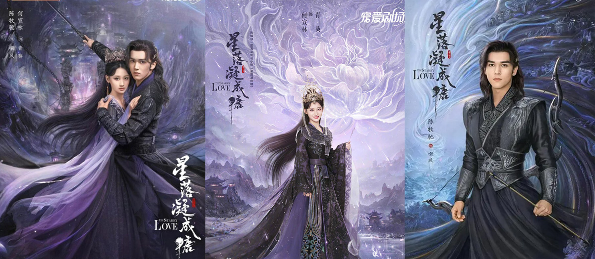
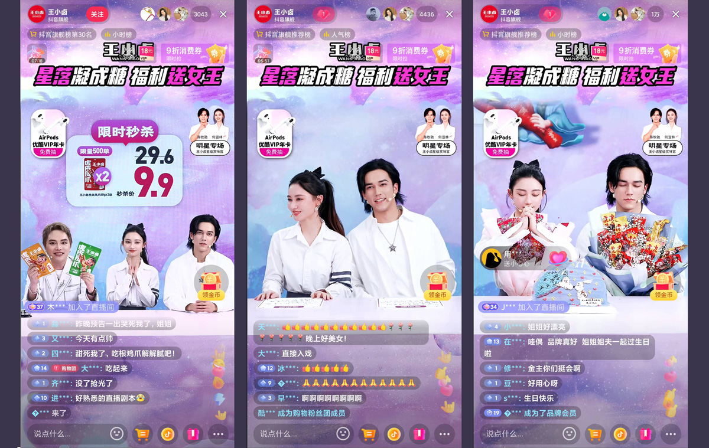

Turning a hit drama partnership into a high-pressure livestream sales campaign.
ClientWang Xiaolu × The Starry Love
RoleDesign Project Manager
ScopeCampaign KV, graphic & digital design, paid media, product imagery, print production & props

In 2023, Wang Xiaolu worked with large media platforms and drama partners as part of its ongoing digital-marketing activity. For International Women’s Day, the brand collaborated with the romantic drama The Starry Love to build a single-platform celebrity livestream campaign designed to convert the show’s audience attention into sales.
The Starry Love premiered on 16 February 2023 on Jiangsu TV and Zhejiang TV, with simultaneous streaming on Youku. By 12 March, the source material records an average combined episode rating of 0.42% across the two television channels. The campaign used that cultural visibility to support a concentrated livestream sales event.
Drama-led creative context

Livestream studio / The secondary romantic couple
The project began only one week before the livestream. I managed the design delivery across campaign key visuals, paid advertising, product-image redesign, digital assets, printed materials and physical props while coordinating closely with printers and internal teams. The compressed schedule made asset control, approvals and cross-functional coordination critical.

Livestream studio / production preparation
The visual direction borrowed from the drama’s romantic fantasy atmosphere so the livestream felt connected to the content partnership rather than functioning as a separate retail event.
Campaign KV, paid assets, redesigned product imagery, printed materials and studio props were managed as one delivery system under an unusually short production window.
Close coordination with production vendors and internal teams allowed the full livestream environment and supporting campaign assets to go live on schedule despite the one-week preparation period.

The final visual direction deliberately leaned toward the drama’s aesthetic, with Wang Xiaolu playing a supporting role inside the livestream environment. This deviation was approved for the collaboration, but it also highlighted a broader design-governance issue: in fast, high-profile partnerships, the brand system needs clearly defined boundaries for what can flex and what must remain consistent.